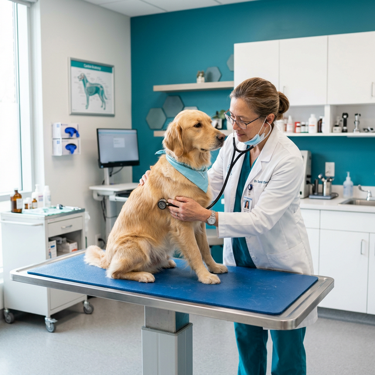
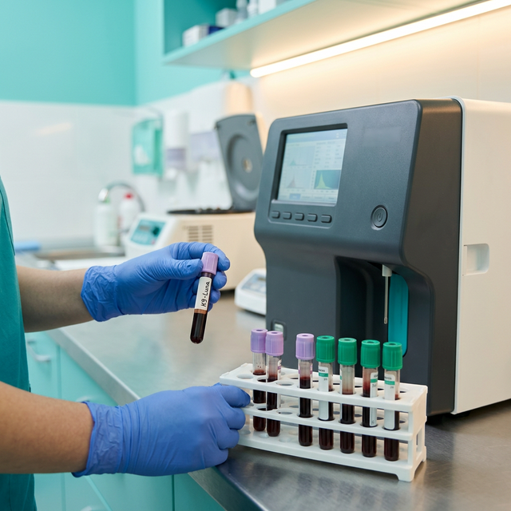
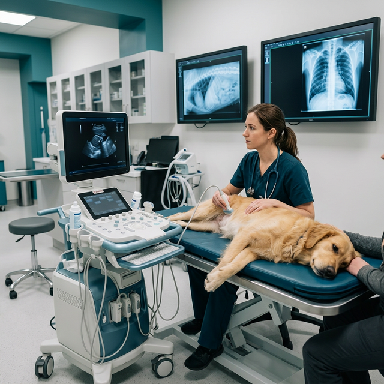

건강검진 센터
반려동물은 아픈 것을 잘 표현하지 못합니다.
따라서 질병이 상당히 진행된 이후에 발견되는 경우가 많습니다.
그린벨 동물의료센터 건강검진센터는
신체검사, 혈액검사, 소변검사, 영상검사 등을 종합적으로 시행하여
질병을 조기에 발견하고 예방하는 것을 목표로 합니다.
보호자의 반려동물이 현재 어떤 건강 상태인지,
앞으로 어떤 질환을 주의해야 하는지까지
정확하고 체계적인 검진 시스템을 통해 확인합니다.

신체검사
Physical Examination
숙련된 수의사가 직접 시행하는 기본이자 가장 중요한 검사입니다.
-
시진 및 촉진 검사
피부, 체형, 림프절, 복부 장기 상태 등을 꼼꼼하게 확인합니다.
-
청진기 청진
심장음, 폐음 등을 평가하여 심장질환이나 호흡기 질환의 가능성을 확인합니다.
-
혈압 측정
고혈압은 신장질환, 심장질환, 갑상선질환과 관련될 수 있어 정기적인 확인이 필요합니다.
-
안과 검사
- 안압 측정 (녹내장 평가)
- 눈물양 검사 (건성각결막염 확인)

혈액검사
Blood Examination
혈액검사는 전신 건강상태를 확인할 수 있는 가장 중요한 검사 중 하나입니다.
-
혈구 검사 (CBC, 5 diff 정밀검사)
빈혈, 염증, 감염 여부 등을 평가합니다.
-
혈청 생화학 검사
간, 신장, 전해질, 대사 상태 등을 종합적으로 확인합니다.
-
혈액가스 및 전해질 검사
산염기 균형 및 체내 전해질 상태를 평가합니다.
-
SDMA 검사
초기 신장 질환을 조기에 발견하는 데 도움이 되는 민감한 신장 기능 검사입니다.
-
염증 검사
- CRP (강아지)
- fSAA (고양이)
-
췌장염 검사
- cPL (강아지)
- fPL (고양이)
-
감염병 검사
- 4DX 검사 (심장사상충, 에를리키아, 라임병, 아나플라즈마)
- 고양이 Triple 검사 (심장사상충, FeLV, FIV)
-
호르몬 검사
갑상선 및 부신 기능 평가
- T4 / Free T4 / TSH
- Cortisol
-
심장 관련 바이오마커
- ProBNP: 심장 부담 정도 평가
- Troponin I (TnI): 심근 손상 여부 확인
소변검사
Urinalysis
소변검사는 신장과 요로 건강 상태를 평가하는 중요한 검사입니다.
-
요비중 검사
신장의 농축 능력을 확인합니다.
-
요 스틱 검사
단백뇨, 혈뇨, 당뇨 여부 등을 빠르게 확인합니다.
-
요분석 검사 (Urine Analyzer)
전용 요분석 장비를 이용하여 소변 성분을 정밀하게 분석하며, 현미경 검사를 통해 세포, 세균, 결정 등의 이상 여부를 추가로 확인합니다.
-
UPC 검사 (요단백/크레아티닌 비율)
단백뇨의 정도를 정밀하게 평가합니다.

영상검사
Imaging
영상검사는 내부 장기의 구조적 이상을 확인하는 데 필수적인 검사입니다.
-
방사선 검사 (X-ray)
흉부 및 복부 장기의 크기와 구조 이상을 확인합니다.
-
치과 방사선 검사
눈에 보이지 않는 치아 뿌리 및 치주 질환을 확인합니다.
-
초음파 검사
- 복부 정밀 초음파
- 심장 초음파 (심장 기능 및 구조 평가)
-
CT 검사
일반 영상검사로 확인하기 어려운 질환을 정밀하게 3차원적으로 평가할 수 있는 검사입니다.
그린벨 건강검진의 특징
경험 많은 수의사의
체계적인 검사 진행
정밀 혈액 검사 및
다양한 특수 검사
심장초음파, 복부초음파,
CT까지 가능한 종합 영상검진
검진 결과에 기반한
맞춤 건강관리 상담
가장 좋은 방법입니다.